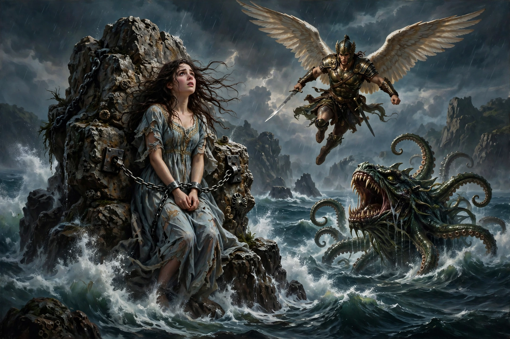

From Wikipedia, the free encyclopedia
| Andromeda | |
|---|---|
| Grouping | Greek mythology; princess of Ethiopia (Aethiopia) |
| Parents | Cepheus and Cassiopeia |
| Spouse | Perseus |
| Known for | Chained to a rock as sacrifice to Cetus; rescued by Perseus |
| Legacy | Constellation Andromeda; ancestress of the Perseid line |

In Greek mythology, Andromeda is the daughter of Cepheus and Cassiopeia, rulers of Ethiopia (Aethiopia), whose beauty provoked the catastrophe from which the hero Perseus rescued her. Her story — the maiden chained to the rock, the sea monster, the flying rescuer — became one of the most painted episodes of Greek myth, and she, her parents, Perseus and the monster were all placed among the stars as neighbouring constellations.
Cassiopeia boasted that her daughter (in some versions, that she herself) surpassed the Nereids in beauty; Poseidon, offended, sent a flood and the sea monster Cetus against the land. An oracle of Ammon declared the kingdom would be spared only if Andromeda were exposed to the monster, and Cepheus, pressed by his people, chained her to a rock by the shore. Perseus, flying home with the head of Medusa, saw her — in Ovid's telling he first mistook her for a marble statue — slew Cetus (with his curved sword, or in other accounts by showing it the Gorgon's head), freed her, and claimed her in marriage, defeating her former betrothed Phineus at the wedding feast when Phineus attacked and was turned to stone with his followers.
Andromeda bore Perseus several sons, ancestors through Perses of the Persians in Greek ethnographic tradition, and of the royal line of Mycenae that led to Heracles. After death, Athena placed her among the stars. The Andromeda Galaxy — the great spiral visible to the naked eye in her constellation — carries her name into modern astronomy. In art she was a favourite subject from classical vase painting through Titian, Rubens and Ingres to the Symbolists; feminist retellings have questioned her silence in the sources, where she barely speaks, and given her voice and agency.
Greek mythology · Perseus · Medusa · Athena · Heracles